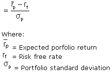

A ratio developed by Nobel laureate William F. Sharpe to measure risk-adjusted performance. The Sharpe ratio is calculated by subtracting the risk-free rate - such as that of the 10-year U.S. Treasury bond - from the rate of return for a portfolio and dividing the result by the standard deviation of the portfolio returns. The Sharpe ratio formula is:
The Sharpe ratio tells us whether a portfolio's returns are due to smart investment decisions or a result of excess risk. This measurement is very useful because although one portfolio or fund can reap higher returns than its peers, it is only a good investment if those higher returns do not come with too much additional risk. The greater a portfolio's Sharpe ratio, the better its risk-adjusted performance has been. A negative Sharpe ratio indicates that a risk-less asset would perform better than the security being analyzed.
A variation of the Sharpe ratio is the Sortino ratio, which removes the effects of upward price movements on standard deviation to measure only return against downward price volatility.
{kind=link}